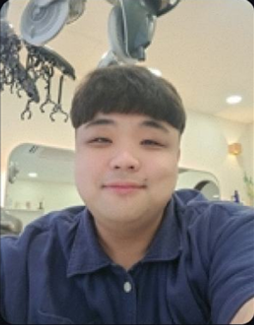

Topping Up
다른 사람의 준비 일정을 내 실행 계획으로 바꾸는 커리어 준비 앱
- Focus
- User Research → Service Structure
- Pages
- 04–11
PORTFOLIO · 2026
PORTFOLIO ASSISTANT
사용자 조사에서 서비스 운영, 실제 제품 제작까지 연결한 세 가지 프로젝트로 답합니다.
사용자 문제를 실제 서비스와 제품으로 연결할 기획자를 찾아줘
USER RESEARCHSERVICE SYSTEMPRODUCT BUILD
전성은 · 서비스기획 / 프로덕트기획 / AX
TOPPING UP · FLOWING · SCALDWORKS
Service · Product Planner

사용자 조사에서 발견한 문제를 목표와 가설로 정리하고, 정책·운영·화면·제작 범위까지 하나의 흐름으로 설계합니다. 빠르게 만든 결과를 다시 검증해 다음 의사결정에 쓸 기준으로 남기는 일을 중요하게 생각합니다.
Figma · Notion · HTML/CSS · Claude · Codex
Selected Works
세 프로젝트는 같은 화면 설계 사례가 아니에요. 사용자 리서치에서 출발한 제품 구조, 온라인과 오프라인을 잇는 서비스 모델, 그리고 제품 제작 자체를 시스템화한 과정으로 범위를 넓혀갑니다.
다른 사람의 준비 일정을 내 실행 계획으로 바꾸는 커리어 준비 앱
생각과 가치관을 먼저 탐색하는 만남 서비스와 오프라인 운영 모델
아이디어를 네 번의 하네스로 검증하는 멀티모델 제품 제작 시스템
Closing
전성은
Service · Product · AX Planning